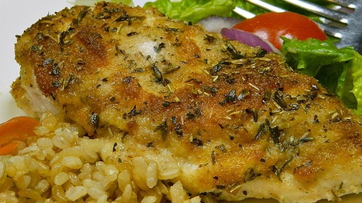
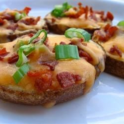
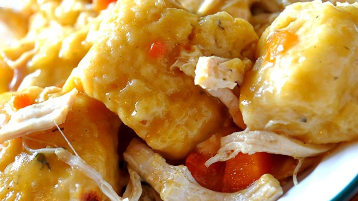

Simple Chicken Mayo with Parmesan and Bread Crumbs

Recipe vitals
- Prep: 10m
- Cook: 20m
- Reday in: 30m
- Serving: 2
Ingredient list
- 2 skinless, bonless chicken breasts
- 2 1/2 tablespoons grated Parmesan cheese
- 2 tablespoons mayonnalise, or more to taste
- 2 tablespoons bread crumbs, or more to taste
- 1 1/2 teaspoons herbes de Provence
Cooking
- Preheat oven to 425 degrees F (220 degrees C). Place chicken
breasts in a baking pan.
- Mix Parmesan cheese and mayonnaise in a bowl; spread evenly
over chicken breasts. Coat with bread crumbs; sprinkle with herbes de Provence.
- Bake in the preheated oven until chicken breasts are no longer
pink in the center and the juices run clear, 20 to 25 minutes.
An instant-read thermometer inserted into the center should read at least 165 degrees F (74 degrees C).
Source
Visit cooking website
Cheese and Bacon Potato Rounds

Recipe vitals
- Prep: 20m
- Cook: 40m
- Ready in: 1h
- Serving: 4
Ingredient list
- 4 baking potatoes, cut into 1/2 inch slices
- 1/4 cup melted butter
- 8 slices bacon - cooked and crumbled
- 8 ounces shredded Cheddar cheese
- 1/2 cup chopped green onions
Cooking
- Preheat oven to 400 degrees F (200 degrees C).
- Brush both side of potato slices with butter; place them on an ungreased cookie sheet. Bake in the preheated 400 degrees F (200 degrees C) oven for 30 to 40 minutes or until lightly browned on both sides, turning once.
- When potatoes are ready, top with bacon, cheese, and green onion; continue baking until the cheese has melted.
Source
Visit cooking website
Slow Cooker Chicken and Dumplings

Recipe vitals
- Prep: 10m
- Cook: 6h
- Ready in: 6h10m
- Serving: 8
Ingredient list
- 4 skinless, boneless chicken breast halves
- 2 tablespoons butter
- 2 (10.75 ounce) cans condensed cream of chicken soup
- 1 onion, finely diced
- 2 (10 ounce) packages refrigerated biscuit dough, torn into pieces
Cooking
- Place the chicken, butter, soup, and onion in a slow cooker, and fill with enough water to cover.
- Cover, and cook for 5 to 6 hours on High. About 30 minutes before serving, place the torn biscuit dough in the slow cooker. Cook until the dough is no longer raw in the center.
Source
Visit cooking website